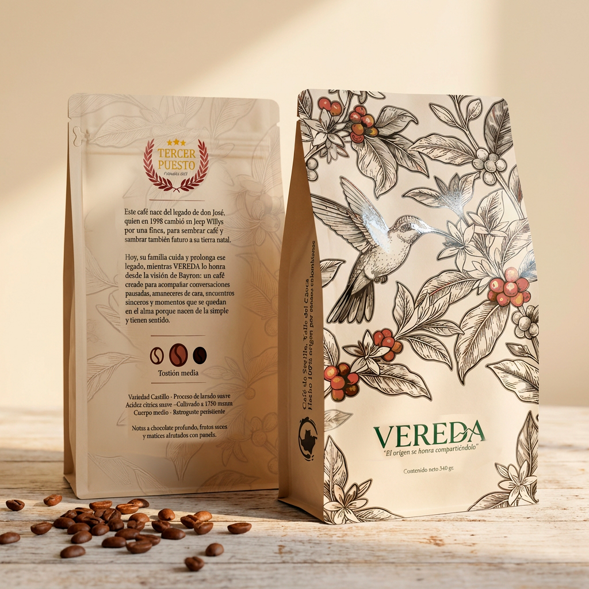

01 · Quién soy
Servir, sin hacer ruido.
Soy Bayron Londoño. Nací en Nariño, Antioquia, y aprendí a amar la montaña recorriendo sus rutas desde niño. Llevo más de diez años en turismo y hospitalidad, y con el tiempo entendí que todo lo que hago nace del mismo lugar: el deseo de servir.
Hoy ese deseo se reparte en cinco caminos —fotografía, inteligencia artificial, viajes, operación hotelera y café— que sostengo con una sola mirada y un mismo estándar de detalle. No busco hacer más, sino hacerlo bien: mostrarle al mundo la Colombia buena, cuidar cada espacio como si fuera propio y acompañar a cada persona con calma.
El detalle siempre está cuidado, aunque tome más tiempo. Y hay una promesa que atraviesa todo lo que construyo: nunca vas a sentir que te venden — vas a sentir que te atienden.
02 · Lo que hago
Cinco caminos. Una sola mirada.
Fotografía
Espacios como
se viven.
Arquitectura, interiorismo y hospitalidad. Luz natural, encuadres que respiran y el silencio bien puesto. Una galería, no un catálogo.
Ver la galería →
Inteligencia artificial
Tecnología con
criterio humano.
Páginas web, dashboards, automatizaciones y atención al cliente que trabaja sola. Herramientas que sirven en silencio para que tu marca atienda mejor.
Ver los proyectos →Raíces · Agencia de viajes
Colombia con alma.
No vendemos paquetes: creamos viajes. Rutas diseñadas al detalle por quien conoce cada lugar de primera mano.
Conocer Raíces →Raíces · Property Management
Tu propiedad,
como nuestra.
Operamos hoteles boutique, cabañas y propiedades con alma. Quien diseña el viaje, opera el hospedaje.
Conocer la operación →Vereda · Café de origen
El origen se honra
compartiéndolo.
Café colombiano de una finca cerca de Sevilla, Valle. Bolsas de colección que narran un territorio. Hecho para la pausa y la conversación.
Descubrir Vereda →
Lo mejor no necesita ruido.
03 · Mi manera de trabajar
Lo que sostiene
todo lo demás.
-
01
Composición y encuadre
Cada imagen y cada espacio respiran. Un solo protagonista por composición; el vacío también comunica.
-
02
Luz natural
Golden hour o luz difusa. Nunca luz dura, nunca artificio que no se sienta real.
-
03
Consistencia
Cinco caminos, una sola mirada estética y el mismo estándar de detalle en todos.
-
04
Precisión en el detalle
El detalle siempre está cuidado, aunque tome más tiempo. Es la promesa de la casa.
-
05
Mentalidad colaborativa
Trabajo con calma y de cerca: escucho primero, propongo después, y acompaño hasta el final.
04 · Contacto
Cuéntame qué buscas.
Viajar, hospedarte, un café con historia, o fotografía y web — te oriento con calma.
bayronlondonoc@gmail.com